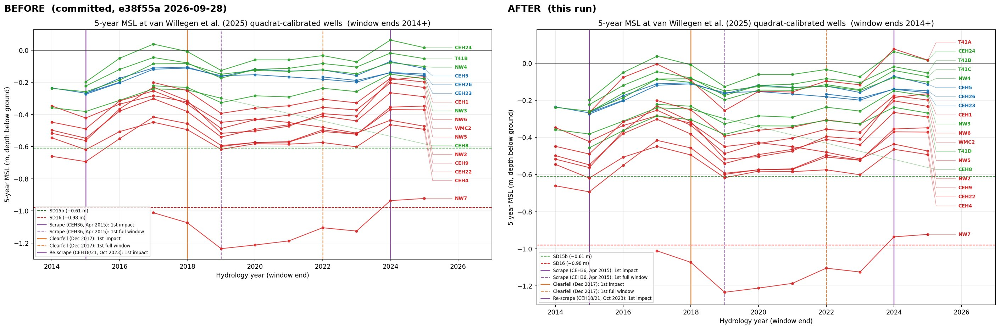
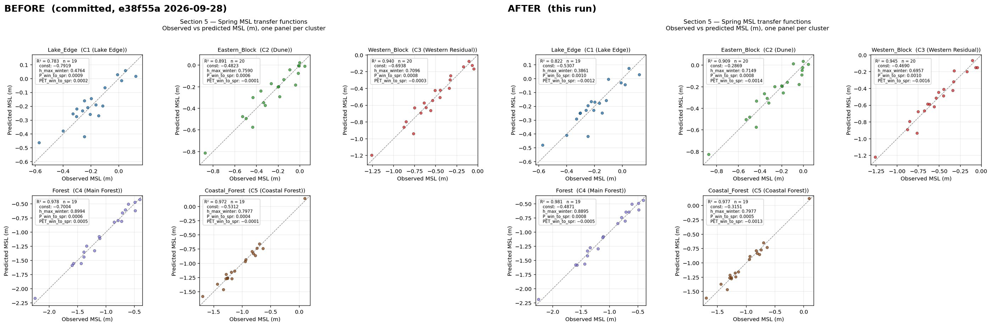

Figure review — before (git HEAD e38f55a 2026-09-28) and after (this run)
outputs/26_van_willegen_msl/26_msl_5yr_quadrat_wells.png

outputs/11_forecasting_thresholds/11_forecast_02_spring_calibration.png
